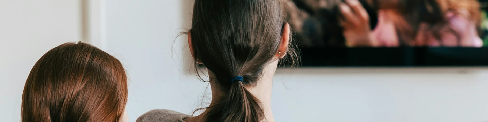

如何從 Disney Plus 中刪除"繼續觀看"
Disney+的"繼續觀看"功能旨在提升用戶體驗，幫助妳快速從上次中斷的地方繼續觀看。每當妳開始觀看某個節目，並在未看完之前退出時，Disney+ 都會自動保存妳的進度，並將該節目添加到妳的"繼續觀看"列表中，以便妳稍後輕鬆訪問。
雖然在大多數情況下，這確實是一個便捷的工具，但很多用戶有時會感到沮喪。例如，如果妳隨意點擊了一集，但只看了幾秒鐘，或者決定根本不看下去，那麼這個劇集仍然會留在妳的列表中。久而久之，這會讓妳的首頁看起來雜亂無章，並對妳的整體觀看體驗產生負面影響。
因此，越來越多的用戶開始尋求手動管理此列表的方法，刪除不打算看完的節目或電影，以保持界面整潔有序。在本指南中，我們將指導妳如何在不同平台上從 Disney+ 的"繼續觀看"列表中刪除項目。
如何在不同設備上刪除"繼續觀看"內容
如何在智能電視上操作
過去，許多用戶無法手動從智能電視的"繼續觀看"列表中移除節目或電影。唯一的解決方法是快進到結尾，這樣系統就會自動將其清除。
不過，根據迪士尼官網的最新更新，這個限制現在已經取消了，妳終於可以直接在智能電視上管理妳的"繼續觀看"列表了。
現在，無論妳使用的是智能電視、Apple TV、Android TV 還是任何其他受支持的設備，妳都可以按照以下步驟輕鬆地從"繼續觀看"列表中刪除項目：
- 導航到"繼續觀看"行，然後使用遙控器突出顯示要刪除的節目或電影。
- 按住選擇按鈕（或按選項按鈕）以調出菜單。
- 選擇"從繼續觀看中刪除"。
或者，妳也可以前往影片的"詳情"頁面移除內容。只需導航到屏幕右側的"移除"圖標並選擇它即可——這樣就能同樣有效地將影片從妳的 Disney+"繼續觀看"列表中移除。
此功能目前正在逐步向全球用戶推出。如果妳尚未在設備上看到該選項，請確保妳的 Disney+ 應用已更新至最新版本，並留意即將推出的可能啟用該功能的更新。
如何在移動設備或網絡上刪除"繼續觀看"
如果妳在移動設備或通過網絡瀏覽器使用 Disney+，不用擔心 - 流程同樣簡單，並且兩個平台上的步驟幾乎相同：
打開 Disney+ 應用，滾動到"繼續觀看"部分。點擊要移除的節目或電影上的三個點圖標（或長按該項目），然後選擇"從繼續觀看中移除"。
將鼠標懸停在"繼續觀看"部分中要移除的影片上。妳會看到縮略圖的頂角出現"移除"或"X"圖標。點擊它即可從列表中刪除該項目。
創建一個新的配置文件來清除所有內容
除了手動刪除單個標題之外，還有另一種方法可以徹底清除"繼續觀看"列表 - 通過創建新的個人資料。
Disney+ 允許每個帳戶最多擁有 7 個個人資料，每個個人資料都有獨立的觀看歷史記錄、推薦和"繼續觀看"列表。這樣，家庭成員可以輕鬆共享一個帳戶，而不會出現觀看活動重疊的情況。
因此，如果妳想快速便捷地重置主頁，創建新的個人資料是一個簡單有效的解決方案。但請記住：這樣做意味著妳將丟失所有之前的觀看進度和個性化推薦。
然而，如果妳是唯一使用 Disney+ 並自行承擔全部訂閱費用的用戶，那麼創建多個帳戶可能感覺有點不必要。畢竟，Disney+ 的設計初衷就是支持帳戶共享，所以不利用這個功能可能會錯失良機。
在這種情況下，妳可以考慮使用像 奈飛小鋪 這樣的平台，在那裡妳可以與其他用戶共享 Disney+ Premium 訂閱。這是一種合法且輕鬆的方式，可以享受與全價訂閱完全相同的功能，而且通常每月費用不到全價訂閱的一半。
作為一個每天都使用 Disney+ 的人，我發現這個服務既劃算又方便。妳只需要在 奈飛小鋪 上選擇適合自己的共享套餐，就能以更優惠的價格享受優質的觀看體驗。
妳還應該知道什麼嗎？
從 Disney+"繼續觀看"列表中刪除節目是一個簡單的過程，它確實有助於清理妳的主頁，以便妳可以專注於妳真正想觀看的內容。
請注意：此操作不會從妳的資料庫中刪除該節目，只會將其從"繼續觀看"部分中移除。如果妳之後改變主意，仍然可以隨時找到並觀看。
常問問題
如何從 Disney Plus 中刪除繼續播放？
要從 Disney Plus 中刪除"繼續觀看"，只需轉到"繼續觀看"部分，將鼠標懸停在要刪除的內容上（在網頁上）或點擊三個點（在移動設備上），然後選擇"從繼續觀看中刪除"。這將刪除內容，但不會將其從妳的媒體庫中刪除。
如何清除 Disney Plus 上的緩存？
要清除 Disney Plus 的緩存，請前往設置設置並找到該應用。在移動設備上，妳可以在應用設置中清除緩存。許多智能電視沒有直接清除緩存的選項，因此通常需要卸載並重新安裝該應用才能清除緩存。
如何清除 Max 上的繼續觀看？
要在 Max 上清除"繼續觀看"，請前往主頁上的"繼續觀看"部分。將鼠標懸停在要移除的內容上（網頁版）或點擊三個點（移動設備版），然後選擇"從繼續觀看中移除"。這將移除該項目，但不會將其從妳的媒體庫中刪除。